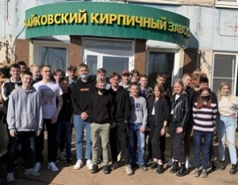
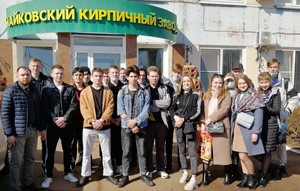

Экскурсия на Чайковский кирпичный завод 2021
Каждый год студенты второго курса в рамках учебного процесса МДК 07.01 «Технология каменных работ» специальности «Строительство и эксплуатация зданий и сооружений» посещают ООО «Чайковский кирпичный завод» - наших социальных партнеров. На этой удивительной экскурсии, которую проводят наши бывшие выпускники ребята узнают, как изготавливается кирпич, от добычи глины до выхода его из печи. На экскурсии студенты проходят все участки производства кирпича. На заводе внедрено большое количество современного оборудования- роботы, которые могут заменить целую бригаду. Только на этой экскурсии можно заглянуть в печь с температурой 1000⁰С и даже пройти по ней, но не обжечься. Чайковский кирпичный завод, имеет непрерывное производство, предприятие является высокопроизводительным и высоко конкурентным поставщиком. Так же завод использует сырец – (глину) находящуюся в непосредственной близости, запасов которой по расчетам специалистов хватит на несколько сотен лет. В самом производстве внедрены такие технологии, что срок от начальной стадии до готовой продукции составляет всего 38-42 часа. Продукт компании высоко экологичный, т.к. для его производства используется только глина, песок и опил. Хочется выразить слова благодарности руководству завода, за ежегодный прием наших студентов на очень познавательную экскурсию. Каждый год во время экскурсии наших студентов приглашают после окончания учебы на работу, что немаловажно в современном мире.

